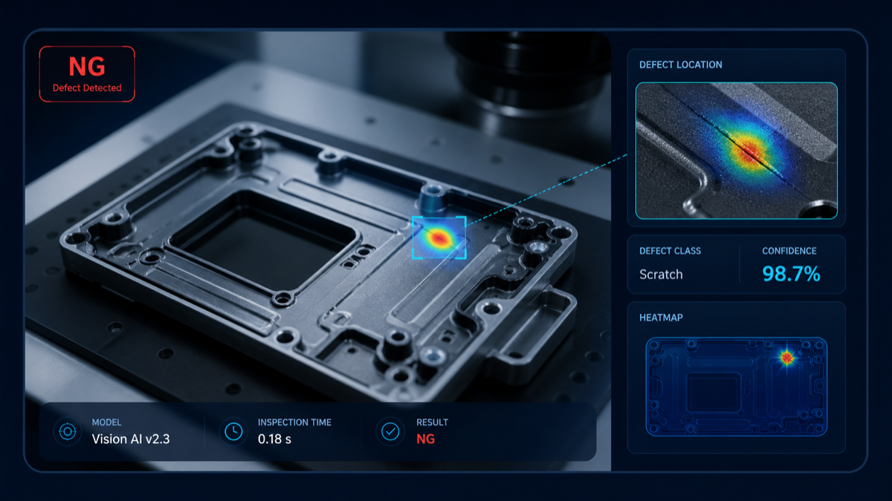
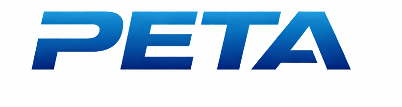

검사
AI 비전검사

제품 이미지에서 미세 불량을 찾고 OK/NG와 Heatmap을 남깁니다.

Industrial AI 문의하기Projects in Progress
Pain Points
Solutions
Projects
페타는 실제 제조 데이터와 업무 흐름을 기반으로 AI 프로젝트를 수행하고 있습니다. 공개 전 고객명과 상세 정보는 익명화합니다.
Industries
Process
Why PETA
Contact